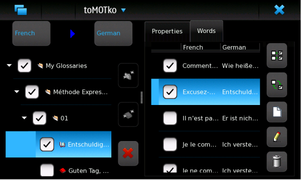
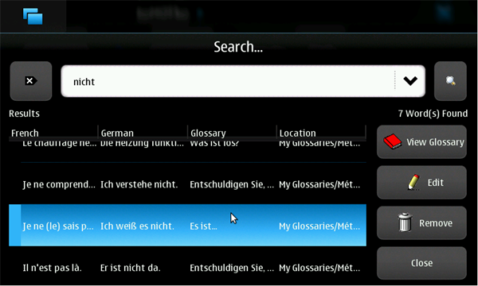

The Glossary Manager is the tool that allows you to manage the words you want to learn.
As shown in the picture below, it is divided in two panels. The left panel contains Language Selectors on top and a hierarchical structure (a tree) including Folders and Glossaries. The right panel displays either a folder or glossary's details.

The tree of the left panel allows you to organize your glossaries in a way very similar to how files are organized on your computer.
You can create a new folder clicking the New Folder button (the first one on the right of the tree). Once created, a folder will be added into the currently selected folder. The sub-folders are sorted alphabetically. You can rename a folder entering a new value in the title field on top of the right panel. You can embed folders into other folders and organize them in a way that makes sense to you.
You can create a new glossary clicking the New Glossary button (the second one on the right of the tree). A glossary contains a list of words that logically belong together. For example, you could have glossary for words related to politics or another one containing animals, and so on. You can provide a title to a glossary to express its content in the title field on top of the Properties panel, on the right side.
You can remove a folder and all its content clicking the Remove Item button (the third one on the right of the tree). A confirmation dialog will appear first. Once a folder is deleted, its content is lost permanently. You can remove a glossary the same way.
Please note that when a glossary is removed, images associated to terms may be deleted as well. If the images are contained inside toMOTko's internal directory, they will be deleted. This generally applies for images coming from imported glossaries. This is a reasonable default behavior that allows to reclaim space from imported glossaries that you don't need anymore.
However, if the images are referenced outside toMOTko's internal directory, they will not be deleted. This generally applies for images that you associate to terms that you created yourself (unless you export and reimport back your glossary, in which case, the images will be copied to toMOTko's internal directory.) This allows you to delete glossaries written by yourself without losing your images.
The right panel is used to manage the selected item in the left panel, either a Folder or a Glossary.
For a Folder, the right panel will display its title, description, and author. You're free to enter any text in these three fields. By default, the author field will take the parent item's value automatically, if defined. For example, if you create a new folder and the parent folder's author is "John Smith", the author of the new folder will take the same value.
Other metadata are available for a folder, including its creation and modification date and a small table containing some interesting statistics like : children folder and glossary counts, whether they are checked and/or available for quiz, etc.
For a Glossary, the right panel is organized similarly but the information is distributed into 2 tabpanels.
The first tabpanel displays the title, the description, and author. You're free to enter any text in these three fields. By default, the author field will take the parent item's value automatically, if defined. For example, if you create a new glossary and the parent folder's author is "John Smith", the author of the new glossary will take the same value.
Other metadata are available for a glossary, including its creation and modification date and a small table containing some interesting statistics like : number of words that it contains, that are checked and available for quiz.
The second tabpanel displays the list of words the glossary contains (including its meanings/readings, if available, in the selected languages).
For better readability, you can resize the left and right panels dragging the separating bar either left or right.
When a Glossary is created, it's empty. It doesn't contain any word. To add a new word, you click the White Sheet button (the third one, right of the Word List, in the left panel). A dialog window will appear where you will be able to input the word and its meanings. A Comment text field is also available for you to put examples or any information that is pertinent to you. You must click Ok on the right side of the dialog to save the modifications. Otherwise, you can click Cancel button to cancel the operation.
To edit a word, you select it and click the Pencil button (the fourth one, right of the Word List, in the left panel).
To delete a word, you select it and click the Garbage Can button (the last one, right of the Word List, in the left panel). A confirmation dialog will appear first. You can select more than one word for deletion. A deleted word is lost permanently and cannot be restored. If some of the selected words contain more than two translations, a dialog box will ask you to choose which translations to delete.
To illustrate all this, here is an example. You could have a Books folder containing two sub-folders for the books Shogun and Geisha. Inside each sub-folder, you could have glossaries for each chapter of each book (like 1, 2, 3, and so on) that would contain words that you want to learn.
The Glossary Manager also allows you to perform the word selection for the Quiz. To select a word that you want to be asked for in the Quiz, you must check the box at the left of the chosen word. You must also check its folder and all its parent folders until you reach the root of the tree (the very first top folder). This defines a kind of path from the root of the tree to the chosen word. When you start a new Quiz, the words that will be considered will be those that are checked and reachable from such paths (from the root glossary). This may seems complicated at first but once you understand the idea, it will allow you select or unselect groups of words very quickly.
The first button at the right of the Word List, in the right panel, allows you to select all words in one click.
The second button at the right of the Word List, in the right panel, allows you to reverse the selected words in one click.
Note: the root of the tree, the very first folder should always be checked. Otherwise, no words will be available for quiz.
It's possible to learn more than one language with toMOTko. To select a learning language, you use the Language Selectors on top of the left panel. You can choose your source language (usually, this will be your mother tongue but it could be another language as well) with the left Language Selector. You can choose the target language (that is, the language you are learning) using the right Language Selector.
The hierarchical tree will update its content in function of the selected languages. Only folders and glossaries related to the selected languages will be shown.
It's also possible to import/export glossary files so that you can share your words with your friends.
To import a glossary, you must first get it from an external source (from Internet, for example). A glossary file is usually a zip archive file. Do not decompress it. Leave it as is. After that, using the Glossary Manager, you select the folder into which you want to import the glossary. Then, you select the Import Data item in the application menu. A file browser dialog will appear and you will be able to select the desired glossary. When a glossary contains words in more than 2 languages, a dialog box will ask you to choose which languages you want to import. If you select a language that is not among the declared study languages (in the preferences), it will be added automatically. If you don't see the imported glossary in the tree, select the appropriate languages with the Language Selector to update the tree.
If any images are associated to some terms in the imported glossary, they will be copied into toMOTko's internal directory. If you ever remove the imported glossary ulteriorly, the imported images will be deleted as well to reclaim space.
A dialog should indicate if the operation was successful or not. If the import fails, check your available space and file permissions.
To export a glossary you select either a glossary or a folder in the Glossary Manager. Then, you select the Export Data item in the application menu. If you select a folder, all the containing glossaries and folders will be exported. When glossaries to export contain words in more than 2 languags, a dialog box will ask you to choose which languages you want to export. A file browser dialog will then appear so you can specify the location and the zip file that will contain the exported data. Once this is done, data should be exported. If any images are associated to some terms, they will be included as well into the zip file so that they can be imported back from someone else.
A dialog message should indicate if the operation was successful or not. If an export fails, check for your available space and file permissions.
The construction of a website dedicated to the sharing of toMOTko glossary files is in planning. However, until the website is properly set up, if you would like to make a vocabulary file available to everybody, send it to toMOTko's author by email. Please mention your name so he can give you credit for your contribution, and also, indicate if your email can be disclosed or not, so that other users can contact you in case of corrections. You should also specify this information in the top folder (or glossary)'s description and author properties. The submitted glossary files will be made available on the toMOTko's homepage to everyone's benefit.
To duplicate or move words, glossaries or folders from one place to another, you can use the Copy, Cut and Paste operations using CTRL+C, CTRL+X, and CTRL+V, respectively.
In case you would like to look for a specific word, you can perform a search invoking the Search tool from the application menu. This can be convenient to find duplicate words or simply to act as a rudimentary dictionary substitute.

Enter the word you want to find in the query field on top of the screen and click the Search button. Number of terms found will be shown and listed below. Each entry will contain the values for the languages specified by the Language Selectors. The name of the glossary containing the term will also be shown and its location as well (similar to a file path). You can access the containing glossary clicking the View Glossary button. You can also directly edit a term clicking the Edit button. This button is also useful to browse the details of a term (for example, to see the image or comment field). It's also possible to remove terms from this list using the Remove button.
To clear the Search form, you can click the special button left of the query field.
Previous queries are stored in the query field. You can retrieve them clicking the down arrow at the right edge of the query field.
If you change the values in the language selector, the Search form will be cleared.
To close the Search dialog, click the Close button.